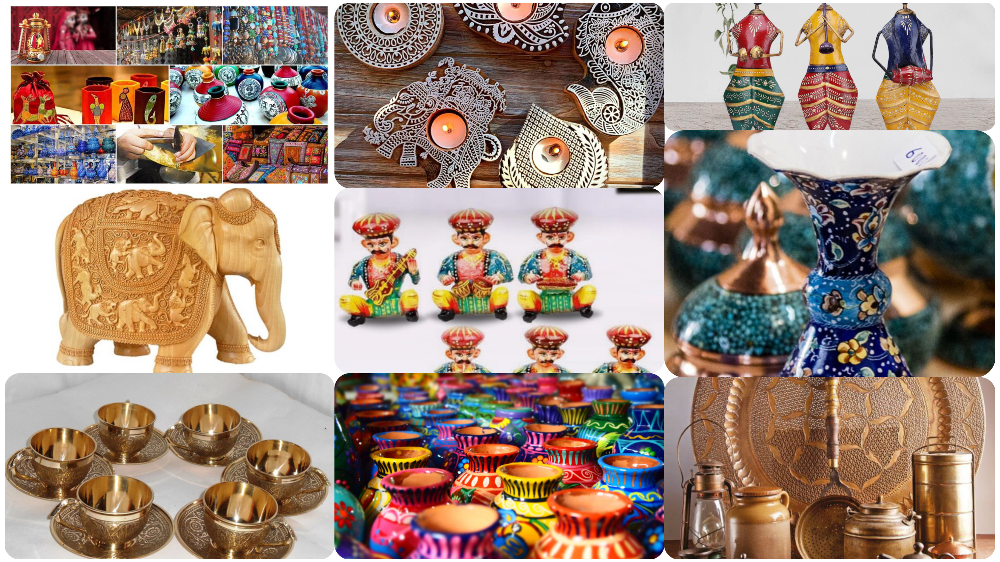

DESIGN A WEBSITE FOR INDIA DIASPORA TO SELL AND BUY INDIAN
HANDICRAFTS PRODUCTS

Project Description
This project aims to create a platform that connects the Indian diaspora with local artisans, allowing them to buy and sell Indian handicrafts. The website will be built using HTML, CSS, and Python, providing a user-friendly interface for both buyers and sellers.
Features
- Authentic Handmade Products
- Global Diaspora Access
- Personalized Recommendations
- Seller Portal for Artisans
- Secure Payments
- Custom Orders & Gifting
- Analytics & Growth Tools (for Sellers)
Technologies Used
Python
JavaScript
HTML
CSS
MySQL